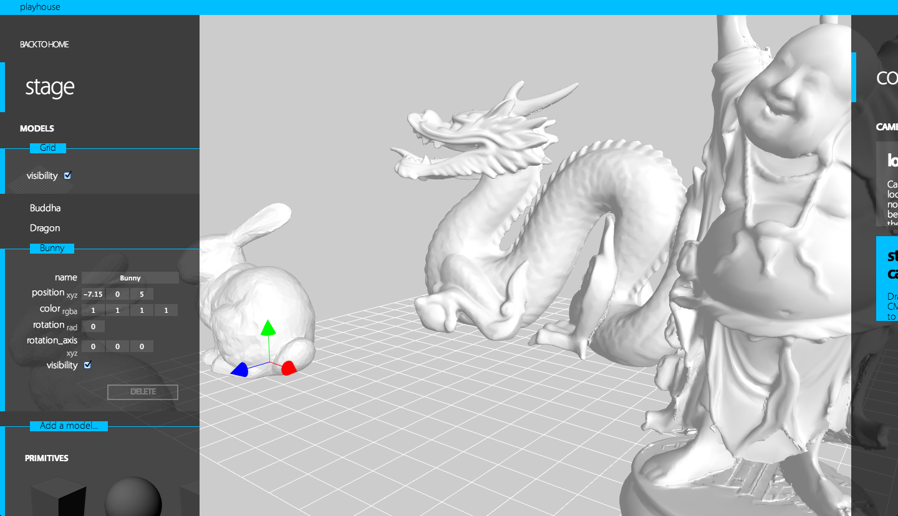

Playhouse
Introduction
Playhouse is a 3D creative web application designed and developed by Freeson Wang. Playhouse aims to be an elegant, simple, and modern application to create in 3D. Currently, it is a proof-of-concept of such an ideal. The following tours Playhouse - its intent, history, development process, and future possibilities.
Purpose
By nature, we graphics people are visual. We want to show our work to others. But distribution is difficult on the desktop. With the rise of web applications and the ongoing maturation of WebGL, 3D in the browser is now feasible. At its conception, Playhouse was a way to solidify my learning of WebGL into something more substantial, but quickly turned into a foundation on top of which I could build and develop interesting demos to show to others easily. It was important for me to equip Playhouse with features that any 3D project would need - for example, a camera system and an ability to move objects. As a design enthusiast, it also became a fun challenge to design a visually attractive and distinct UI.

Playhouse works in all browsers that support WebGL (Google Chrome, Firefox, and Safari).
Development
Frameworks & Libraries
Playhouse is made in JavaScript with WebGL, MooTools, KnockoutJS, and glMatrix. When choosing libraries, I made it a point to purposely not choose something that would simplify the 3D work, for example, three.js or GLGE. The libraries I chose - MooTools and KnockoutJS allow for quicker development. MooTools helps by extending JavaScript's core functionality. KnockoutJS is a library that syncs model data with view data. It makes updating a number field, for example, trivially easy. After creating an observable, one only needs to update the actual numerical data, and the UI will change automatically. This really helped rapid prototyping and development of Playhouse's UI.

KnockoutJS makes talking to the view from the model and the model from the view simpler.
Process
The tutorials on Learning WebGL were indispensible to me. While I already had experience with OpenGL, WebGL is based on OpenGL ES and therefore is still full of surprises to someone familiar with its desktop counterpart. My learning began with putting up a few vertices with vertex buffers (there is no immediate mode in WebGL!) onto the screen with a simple vertex and fragment shader. I familiarized myself with working with multiple buffers - i.e. normals, indices, colors, and texture coordinate buffers. From there, I learned to texture, shade, and light the scene. After that, I felt that I had enough of my bearings to work without the tutorials.
Shading
Shading the scene for the different models was an interesting challenge. Because WebGL is based on OpenGL ES, there are no default shaders, so getting even basic lighting is non-trivial. After trial and error, I found that unique shaders need to be generated for different requirements - for instance, if a model has textures then the shader program would specify lines of code for the sampler in its source text upon compilation. Playhouse caches these shaders by their capabilities.
Playhouse generates different shaders to shade in a variety of different ways. Here we have a shader with lighting and texture for Seymour from Final Fantasy X, a shader with lighting but no texture for the cube, and a shader with neither for a dragon. Similarly, the manipulators shown are using flat shaders.
OBJs
Playhouse has the ability to add OBJs into the scene, and it provides the user with a couple from popular games. The OBJ file format, while a bit abstruse, basically specifies (in a human readable ASCII file) the vertices, faces/indices, normals, and texture coordinates for a premade model. The one issue with OBJs that makes it hard to play with OpenGL/WebGL is that the OBJ format can layout multiple indicies arrays (for example a separate vertex indices array and normals indices array). Ultimately, after a little headache with this, the solution is to unwrap the data arrays so that no indices arrays are used. Despite the memory hit, this produced pleasing results. Finally, some models had to be scaled first because their vertices were too big - this was especially true of Japanese made games.
Playhouse supports viewing OBJs. Japanese models such as Wakka from Final Fantasy X needed to be specially scaled beforehand.
After getting OBJs to load, I noticed that alpha transparency wasn't working correctly. Because of OpenGL's dependence on draw order, the background of a face with transparency will not peek through if it is drawn after the transparent face; thus, any transparent face must be drawn last so that the background is already drawn on the canvas. One possible solution would be to sort the faces by their z index to make sure that the background is drawn before the foreground, to draw like a painter (hence this being known as the Painter's algorithm). Another much quicker solution that I ultimately chose is to draw all the opaque pixels first and then draw the remaining pixels with transparency (any alpha value less than one). Despite occasional artifacts, and also the performance hit of drawing everything twice, this produced pleasing results.
A comparison of the results before the second translucent pass technique and after. Lightning from Final Fantasy XIII was particularly egregious because her hair uses a lot of translucency to achieve a realistic look.
Interaction
Picking, that is being able to choose a model when clicked, is also possible in WebGL. One possible way this could have been implemented would to raycast into the scene, however, the alternative and quicker implementation that Playhouse uses, the pixels of the entire canvas are associated with a model's id by flatly rendering each model in the scene with a different color. For instance, the first model would be rendered as (1, 0 0), while the 275th model would be rendered as (256, 19, 0). Unfortunately, that limits Playhouse to 768 pickable objects (including manipulators and such) in the scene, which will be a problem when the other geometric elements, such as faces or vertices, are to be made selectable.
A user can also manipulate the camera and move models in Playhouse. Camera manipulation and movement are currently implemented by applying the delta of mouse movement to the translation and rotation matrices of the scene or model.
UI
I wanted Playhouse to have a daring UI, and the web also seemed to be a suitable place to experiment. I have used 3D creative applications like Maya before, but always found them intensely confusing because they are intended for professionals. A big problem I saw with applications like Maya is that everything seems hidden and tucked away in a menu somewhere. To a novice user, the mental geography needed to understand Maya is labyrinthine. I want a user to be able to start off and feel like they are standing somewhere where they can see the lay of the land. "I can see everything, so I know where I want to go". An application should be able to place all its features up front.
Playhouse at launch. The side panel is displayed prominently with all possible locations and actions displayed. The conductor hides quietly at the side. The grid is loaded as a default model to echo Maya's interface and signal to the user that this is a 3D creative application.
Therefore, I made sure that everything should be in one (visual) place, the side panel on the left. I was adamant about this. At one point during development, the question of a modal question box arose. For example, should there be a pop-up box asking what the parameters for a cube would be? I did not want such a box - if there were to be anything asking for parameters it would be visually located as a flyout or expanded element in the left side panel.
On the other hand, the conductor panel on the right is intended for manipulating global state and accessing quick actions. For example, the user can specify if he or she wants lock their selection to avoid accidental input. Programmatically, keyboard and mouse listeners are being taken down and hooked up for the various states, behind the scenes. This feature is in its infancy and will be expanded upon in the future.
Here, the user has locked the manipulation. Notice that while the sphere is selected (as shown by the expanded sphere entry in the side panel), the manipulators are not displayed.
Playhouse's visual language is intended to be minimalist, but not intimidating. Cool, but never snobbish, and always friendly. It draws heavily from midcentury Swiss design, and you'll also undoubtably see the similarities between Playhouse's UI and Microsoft's Metro design language, which I readily admit I am a big fan of. The font that is used is a great free humanist font Vegur that I found conveys a great sense of friendliness to the application.
Future Work
Currently, Playhouse is a great foundation on which I can continue developing more complex features. In the near future, I want to refine Playhouse's codebase to be a little more elegant. While I am satisfied with a large majority of the codebase, I feel that I may have outgrown KnockoutJS's intended use. I am currently researching more powerful JavaScript frameworks such as EmberJS. After refining Playhouse, I want to implement meatier, more algorithmically-intensive features such as bump-mapping, raytracing, and simulations. Additionally, I also have some fun UI ideas about how the user can add simulation and animation to the stage.
References
Here is a list of additional information and links that I think is useful.
- The MooTools framework was absolutely essential to softening JavaScript's awkwardness.
- The KnockoutJS library was a great help at simplifying the process of keeping programatic data in sync with the UI view.
- The glMatrix library is very useful for those that want an easy-to-use matrix and vector library.
- The Learning WebGL tutorials and blog is a great starting point for anyone learning WebGL.
- It should be obvious but StackOverflow really is a great compedium of data. Here is a list of questions/answers that I found useful:
- Chrome: Disable same origin policy shows how to launch Chrome for WebGL development that needs to talk to the local filesystem.
- 3 index buffers talks about the issue of OBJ format specifiying many different indices arrays. The key is to flatten the arrays so as not to use indices at all. This does increase memory usage.
- Are JavaScript typed arrays initialized to 0? answers the question of whether or not Float32Arrays are initialized to zero. (They are).
- How do I use WebGL drawElements offset? shows how to specify an offset when drawing so that groups can be drawn with different textures.
- Knockoutjs - Transitions between dynamic template switching? shows how to add an effect between template switches. The key is to latch onto the afterRender event, hide all the elements, and reanimate them again.